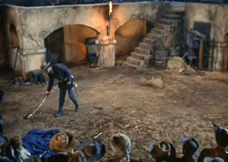

Set the Line Before It's Crossed
Be prepared to act when the time comes.
Contents
Lines Will Move Further Away If They Aren't Defined
Many types of lines—in the policy/behavior sense—exist: soft lines are okay to cross, just not preferable; hard lines are not okay to cross.
Most lines are rarely set, rarely defined, and rarely thought about in great detail. Most line setters use the good ol' "I know it when I see it" test, waiting for something bad to happen before they decide what to do. This is bad because normalization of deviance exists as a pernicious force of the world.

Once the line is crossed, the commitment must be honored
When lines aren't set before they're crossed, it forces a decision to be made at the time of crossing (if it can even be recognized that something was crossed), at which time many things can happen:
-
The line setter convinces themselves that the line wasn't really crossed and everything is fine. This will land the line setter in not-so-nice territory if this occurs enough times because the line effectively moves back each time.
-
Ex: Ruben, Lou's boyfriend, playfully pinches her, then playfully punches her, then seriously pinches her, then seriously punches her, and so on. Each time she convinced herself that her domestic abuse line wasn't crossed; now she's getting full-on abused.
-
The line setter acknowledges the line was crossed, but because taking action is uncomfortable at the time of crossing, vows to wait until it happens a second time because the first time may have been a one-off. This increases the likelihood they give a third chance to the offense when/if they apply the same thought process to the second.
-
Ex: Diane blatantly lies and talks about Joe both behind his back and to his face. Joe explains away the behavior as Diane having a stressful time and continues being "friends". Diane continues the behavior while Joe accepts and normalizes it as Diane's personality.
-
The line setter acknowledges the line was crossed, but convinces themselves that the line really should've been just a teeny bit further.
-
Ex: Harlan's original salary threshold for taking the Giving What We Can pledge was $100k/year, but now that he's reached it, it feels a bit low. After all, he deserves to treat himself a bit more for all the hard work he put himself through to get to the coveted six-figure salary. Plus, he may have a baby in the next few years! And everyone knows how expensive babies are! Harlan resets his salary goal at $120k, which will be plenty when the time comes.
How to Set a Line
First, figure out the general line. Whether it's domestic abuse, talking smack, donating money, or rights being restricted or revoked, it must be defined.
Second, define the criteria for both the soft and hard versions. The soft line being crossed serves as a forewarning to the hard line being crossed, giving ample preparation time if needed. The criteria must be well-defined with little room for interpretation.
Third, decide how many times each can be crossed before the action is taken. It's fine to give someone a stern reminder that they crossed the line in case they forgot, weren't aware of the line, etc. It's not fine for it to happen more than the set number allows.
Fourth, define the actions for each line.
Fifth, communicate the lines and actions to people who either may be at risk of crossing them or will help with maintaining accountability of executing said actions.
Line Ideas
Here are some hard line ideas and associated actions (in no particular order):
See Also